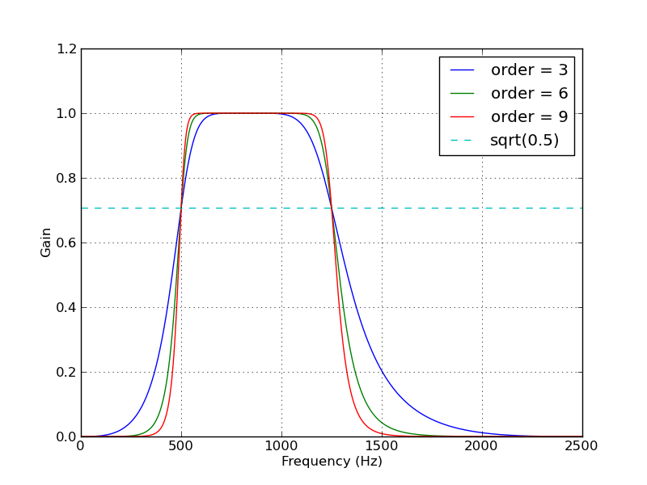
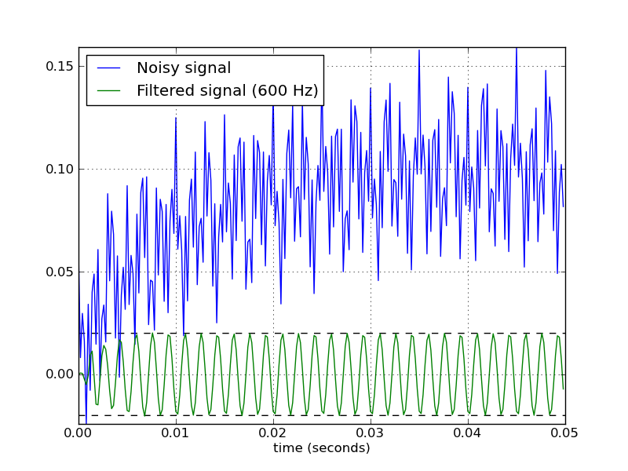

This cookbook recipe demonstrates the use of `scipy.signal.butter` to create a bandpass Butterworth filter. `scipy.signal.freqz` is used to compute the frequency response, and `scipy.signal.lfilter` is used to apply the filter to a signal. (This code was originally given in an answer to a question at stackoverflow.com.)
#!python
from scipy.signal import butter, lfilter
def butter_bandpass(lowcut, highcut, fs, order=5):
nyq = 0.5 * fs
low = lowcut / nyq
high = highcut / nyq
b, a = butter(order, [low, high], btype='band')
return b, a
def butter_bandpass_filter(data, lowcut, highcut, fs, order=5):
b, a = butter_bandpass(lowcut, highcut, fs, order=order)
y = lfilter(b, a, data)
return y
if __name__ == "__main__":
import numpy as np
import matplotlib.pyplot as plt
from scipy.signal import freqz
# Sample rate and desired cutoff frequencies (in Hz).
fs = 5000.0
lowcut = 500.0
highcut = 1250.0
# Plot the frequency response for a few different orders.
plt.figure(1)
plt.clf()
for order in [3, 6, 9]:
b, a = butter_bandpass(lowcut, highcut, fs, order=order)
w, h = freqz(b, a, worN=2000)
plt.plot((fs * 0.5 / np.pi) * w, abs(h), label="order = %d" % order)
plt.plot([0, 0.5 * fs], [np.sqrt(0.5), np.sqrt(0.5)],
'--', label='sqrt(0.5)')
plt.xlabel('Frequency (Hz)')
plt.ylabel('Gain')
plt.grid(True)
plt.legend(loc='best')
# Filter a noisy signal.
T = 0.05
nsamples = T * fs
t = np.linspace(0, T, nsamples, endpoint=False)
a = 0.02
f0 = 600.0
x = 0.1 * np.sin(2 * np.pi * 1.2 * np.sqrt(t))
x += 0.01 * np.cos(2 * np.pi * 312 * t + 0.1)
x += a * np.cos(2 * np.pi * f0 * t + .11)
x += 0.03 * np.cos(2 * np.pi * 2000 * t)
plt.figure(2)
plt.clf()
plt.plot(t, x, label='Noisy signal')
y = butter_bandpass_filter(x, lowcut, highcut, fs, order=6)
plt.plot(t, y, label='Filtered signal (%g Hz)' % f0)
plt.xlabel('time (seconds)')
plt.hlines([-a, a], 0, T, linestyles='--')
plt.grid(True)
plt.axis('tight')
plt.legend(loc='upper left')
plt.show()
The plots generated by the above code:
 